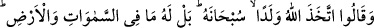
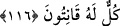

emrine imtisâlen asâsıyla Fir’avn’ın kapısını çaldı. Hz. Mûsâ’nın kapıyı şiddetli
vurmasının tesiriyle korkudan Fir’avn’ın sakalının ağardığı söylenir. Fir’avn, kapıya
çıktı ve Mûsâ’ya: “Seni biz yetiştirmedik mi, ne oluyor?” dedi. Hz. Mûsâ da: “Evet, ben
de zâten bu yüzden üzerimde hakkın olduğu için herkesten önce seni dâ’vet ediyorum.”
dedi. Mûsâ’yı öldürmek istediler. O da asâsını yere bıraktı, asâ büyük bir yılana
dönüştü ve onları yutmaya yöneldi. Hz. Mûsâ’dan emân istediler. Mûsâ da onlara emân
verdi. Aslında Fir’avn îmân etmek istiyordu, fakat Hâmân ona engel oldu. Hz. Mûsâ,
Fir’avn’ı Hakk’a dâ’vet ettikten sonra âilesini bıraktığı yere geldi. Bu sırada eşi doğum
yapmış ve onu korumak için etrafı da kurtlarla çevrilmişti. Oradan hiçbir canlı
geçemiyordu. Allah’ın kudretine bakıp ibret almalı.
Rivâyet olunduğuna göre, İmâm-ı Âzam önceleri halkı kendi mezhebine dâ’vet
etmekle meşgul olmadı. Ancak inzivâya çekildiği bir sırada rüyâsında Hz. Peygamber’i
görüp aldığı müjdeden sonra dâ’vete başladı. Bu, onun hakîkate ulaştığının en sağlam
delîlidir. İmâm-ı Âzam her gece kalkar ibâdet ederdi. Bir gün Kâbe’de hâtiften: “Ey
Ebû Hanife, bana ihlâsla hizmet ettin, beni iyi bildin. Ben de seni ve kıyâmete kadar
sana tâbi olanları affettim.” diye bir ses işitti. Bu rivâyet Muhammed Belhî’nin Aynü’l-
ilm adlı eserinde vardır.
Âriflerden biri şöyle demiştir: “Beşerin kıblesi Kâbe’dir, semâ ehlinin kıblesi Beyt-i
Ma’mûr’dur. Kerrûbiyyûn’un kıblesi Kürsî’dir. Hamele-i Arş’ın kıblesi de Arş’dır.
Hepsinin maksad ve matlûbu ise vechullah yâni Allah rızâsıdır.
116. “Allah çocuk edindi” dediler. Hâşâ! O, bundan münezzehtir. Oysa göklerde
ve yerde olanların hepsi O’nundur, hepsi O’na boyun eğmiştir.
Âyet, yahûdîlerin: “Üzeyr, Allah’ın oğludur.”, hıristiyanların: “Îsâ, Allah’ın oğludur.”
ve Arap müşriklerin: “Melekler, Allah’ın kızlarıdır.” demeleri üzerine nâzil olmuştur.
Âyette geçen “dediler” ifâdesi, bu üç grubu içine almaktadır. Yahûdîler ve hıristiyanlar,
açık bir şekilde zikrolunmuşlardı. Üçüncü grub ise müteâkıb âyetlerde gelen
“Bilmeyenler de tıpkı onların dedikleri gibi demişlerdi.” ifâdesinden anlaşılmaktadır.
Bu durumda mânâ: “Yahûdîler, hıristiyanlar ve bilmeyenlerden de onlara katılanlar
dediler...” şeklinde olur. “Allah çocuk edindi.” demelerinden maksad; ya Allah çocuk
yaptı ya da yaratıklardan bir kısmını çocuk yapıp onların kendi çocuğu olduklarını iddiâ
etti, demektir.
Allah Teâlâ, çocuk edinmekten de çocuk edinmeyi gerekli kılan sebeblerden de
münezzehdir. Zira çocuk edinmede, kendisine yardım edecek ve ölümünden sonra yerine
geçecek birisine ihtiyaç ve teşbih gibi Allah’ın ulûhiyetine asla yakışmayacak sıfatlar